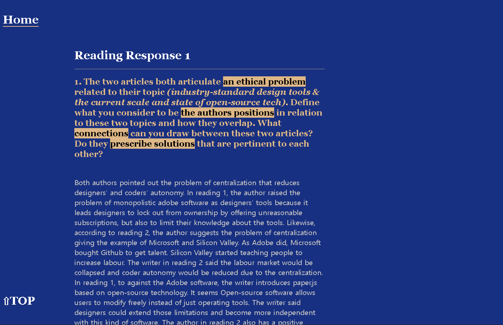

Working process
Feb.18.2020
Based on the feadback, I changed the colour for the reading response page.
Testing the page, I realized that it might be hard to scroll up if users read them all.
So, I made the top button. I wanted to put animation for the top button, but I don't know how to do it.
So, I used a tage instead. During the class, I finally know how to change to the web font.
I changed the font for the mainpage to the Roboto.
Feb.25.2020
Since I finished the project1 : confounding tool, I thought I could put my work into the website.
I watched a lot of
videos to learn coding. I came out I could use CSS animation for the webpage.
Checking the Youtube video,
I made layout using the CSS animation like @keyframe tag.
The onething I had trouble was the animation covered div boxes.
Using position:absolute, I solved the problem.

the process page, I thought it would be difficult to use if it just has left and right buttons to move other pages.
So, I made a new bar on the right to select the specific date to read.